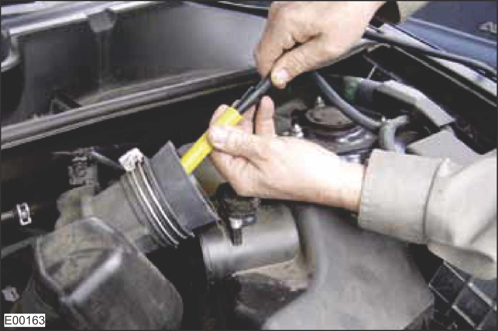

Check the Charge Air System and Air Delivery Pipes
Smoke test tool (Bosch SMT 300 is recommended)
Ignition key is in the STOP position.
Air filter is clean.
Visually check the following air charge piping for damage, loose fittings, and tightness.

Boost Pressure Lines
A
Pipe from the Charge Air Cooler to the Intake Air Manifold
B
Exhaust Pipe Outlet from the Turbocharger
C
Charge Air Pipe Downstream from the Turbocharger to the Charge Air Cooler
Pipe from the turbo charger to the charge air cooler
Pipe from the charge air cooler to the intake air manifold
Exhaust pipe downstream of the turbo charger
If the air charge piping is damaged, investigate these possible root causes:
Charge pipes are damaged.
Clamps are loose.
Locate and correct the cause of the damage, then use the PT-Box tool or LogOn to clear all fault codes and verify that the fault is resolved.
If the air charge piping is not damaged, continue to the next step.
Check the air cooler and pressure pipes with a smoke test tool.
The following basic test procedure detects air cooler and pressure pipes leakages. Through this procedure, it is possible to check the following components:
Gasket leak
Clamps leak
Pipe/manifold damage
Charge air cooler damage
Connect the smoke test tool to the workshop air supply.
Connect the smoke test tool to the battery supply terminals.
Connect the smoke supply hose to the system being tested (flow control valve fully open).

Turn ON the smoke test tool and fill the system with smoke for 5 minutes.
Use a white light source to look for exiting smoke, or use an ultraviolet light to look for fluorescent dye deposit at the exact location of a leak.

Vapours can be identified under white light
Dye can be identified under UV light with yellow glass
If vapour leakage or dye is identified, investigate these possible root causes:
Charge air pipes are damaged.
Charge air pipes are not correctly fitted.
Gasket/seals are damaged.
Intake air manifold is damaged or not correctly fitted.
Charge air cooler is damaged.
Locate and correct the source of the leaks, then use the PT-Box tool or LogOn to clear all fault codes and verify that the fault is resolved.
If the charge air cooler is OK, continue to the next step.
Visually check the intake air manifold.
START the engine and run the engine at low speed.
Visually check the intake air manifold for leaks and cracks.
If the intake air manifold is NOT OK, investigate these possible root causes:
Intake air manifold is damaged or not correctly fitted.
Gasket is damaged.
Locate and correct the leaks or damage, then use the PT-Box tool or LogOn to clear all fault codes and verify that the fault is resolved.
If the intake air manifold is OK, continue to the next step.
Visually check the charge air cooler for air leakage.
Check the charge air cooler for cracks and damages.
Check the charge air pipes to and from the charge air cooler for damage, spits, and loose fittings.
Check for air leakage using pressurized air.
START the engine and run at low speed, then check for air leakage.
If leaks or damage is found, investigate these possible root causes:
Charge air cooler is damaged.
Charge air cooler pipes are damaged.
Locate and correct the leaks or damage, then use the PT-Box tool or LogOn to clear all fault codes and verify that the fault is resolved.
If no leaks or damage is found, continue to the next step.
The charge air cooler works properly.